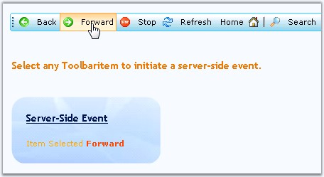

The ToolBar control raises server side events as users interact with the items. This procedure creates a simple example of raising and processing the server side ItemClick event.
When the server side events are raised the following members can be accessed.
|
Event Argument |
Description |
|
CommandArgument |
Returns the argument for the command. |
|
CommandName |
Returns the name of the command. |
|
Item |
Returns the toolbar item object. |
To raise and process the server side ItemClick event

Figure 287: Event raised on selecting the Redo item
1. From the toolbox, add ToolBar to the design surface of an ASP.NET page.
94. In html view, add the following code.
|
<cc1:ToolBar id="ToolBar1" style = "POSITION: absolute" runat = "server" CustomCSS = "css/toolbarstyle.css" ControlRootCSSClass = " " ControlRootTableCSSClass = " ">
<Items> <cc1:ToolBarItem ImageURL = "TBleft.gif" ID = "Itemleft" LookDisabled = "DisableLook" AppearanceMode = "ImageOnly" Text = "New Project"> </cc1:ToolBarItem> ..... <cc1:ToolBarItem ImageURL = "TBright.gif" ID = "Itemright" LookDisabled = "DisableLook" AppearanceMode = "ImageOnly"> </cc1:ToolBarItem> </Items>
<ItemLooks> <!-- Add the required item looks !--> </ItemLooks>
</cc1:ToolBar> |
95. An ASP.NET textbox control called TextBox1 is added to the page.
96. The code behind file to handle the ItemClick event, where the ToolBarItemEventArgs returns the selectedItemText if an item is selected.
|
[C#]
private void ToolBar1_Click(object sender, Syncfusion.Web.UI.WebControls.Tools.ToolBar.ToolBarCommandEventArgs e) { Label2.Text = e.Item.Text; } |
|
[VB]
Private Sub ToolBar1_Click(ByVal sender As Object, ByVal e As Syncfusion.Web.UI.WebControls.Tools.ToolBar.ToolBarCommandEventArgs) Label2.Text = e.Item.Text End Sub |
See Also